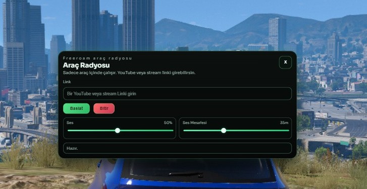

Kurulum kolay, paket temiz.
resources klasorune atip server.cfg icine eklemen yeterli. Sonraki surumleri bu yapiyi bozmadan ustune ekleyebiliriz.
Bu kurulumda sadece ilk surum olan Radio V1.0 bulunuyor. Boylesi daha temiz bir yapi saglar; sonraki surumleri istersek tek tek ekleriz.

resources klasorune atip server.cfg icine eklemen yeterli. Sonraki surumleri bu yapiyi bozmadan ustune ekleyebiliriz.
Surum surum ilerlemek icin hazirlanan ilk temiz paket.
Baslangic paketi olarak sadece ilk surum yayinda tutuluyor. Bu sayede GitHub tarafinda da klasor duzeni bozulmaz ve her yeni surum sonradan eklenir.